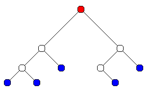

A tree is a hierachial data structure. An example is a directory tree (excluding any files in the tree): Each directory consists of a name and subdirectories.
Trees are typically drawn as in the diagram below. The circles are the data elements (the names of directories) and the lines below each circle join it to its subtrees (subdirectories). 
The data elements in a tree are called nodes. The node at the "top" of a tree is called the root (shown in red). The children of a node are the nodes below it and connected to it (like subdirectories in a directory tree). A leaf is a node with no children (sometimes trees will only store actual data in the leaves).
A node's parent is the node above it and connected to it (every node except the root has a parent). Descendants and ancestors are defined in the same way as family relationships e.g. a parent's parent's parent is an ancestor and a child's child's child is a descendant. A subtree consists of a node and all its descendants (which is itself a tree, with the root being the chosen node).
The rest of this page will deal almost entirely with binary trees. A binary tree is a tree in which every node has at most two children, and the order of the children is usually important. The children are usually referred to as the left child and the right child. Also, if there is only one child, significance is usually still given to whether it is a left or a right child.
The left subtree of a node is the subtree consisting of the left child and all its descendants, and likewise for the right subtree.
A binary search tree is a binary tree in which the data elements are of a type with some kind of ordering (e.g. integers or strings). The left subtree of any given node contains only children smaller than that node, and the right subtree contains only children larger than that node (children that are equal can go either way as long as you are consistent).
Binary search trees are usually constructed one element at a time. To add a new element, start at the root and go left if the new element is smaller than the root and right otherwise. Repeat this at each node until you find an unoccupied space and add the new node there.
To search for a given element, follow the same process as with adding a new element until you either find the element you want or find an empty spot, in which case the element isn't there.
You can also convert a binary search tree into a sorted list of the elements by doing a in-order walk of the tree. This is the basis of the binary tree sort.
A "walk" of a tree is basically a way of ordering its elements. There is usually a particular action that has to be performed on each element in the given order.
There are three standard types of walk. All of them are recursive, and all of them involve outputting the root, walking the left subtree and walking the right subtree. The difference is in the ordering. They are as follows:
The in-order walk is particularly useful on a binary search tree, because the elements are visited in sorted order. Walks are generally useful on trees where each node has some logical relation to its subtrees. For example, a tree could have arithmetic operators at nodes, which represent an operation to be applied to the subtrees, and numbers at the leaves. Then an in-order walk would produce normal notation while a post-order walk would produce the Reverse Polish or postfix notation used by old HP calculators.
Last updated Wed May 28 19:34:56.0000000000 2008. Copyright Bruce Merry (bmerry '@' gmail dot. com).